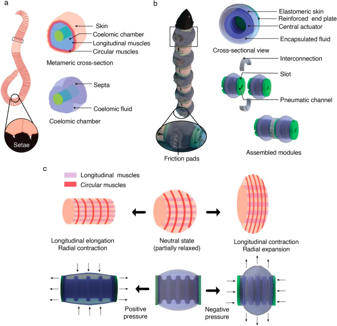
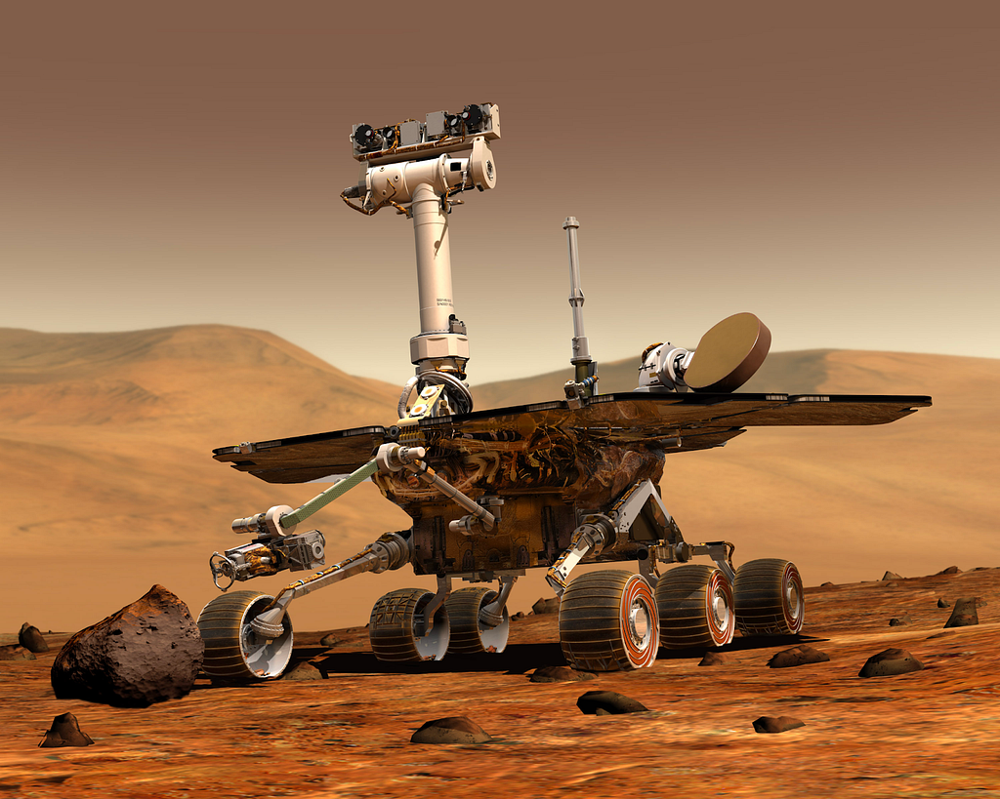
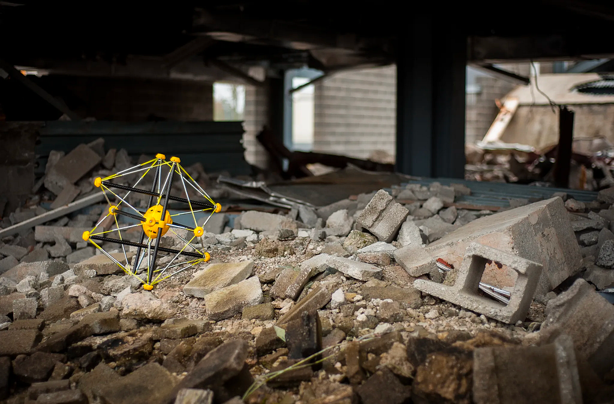
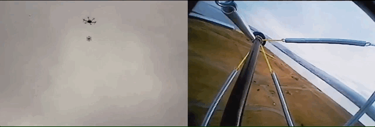

Nov 2023
Exploring Environments Beyond Imagination: Soft Robotics and AI Revolutionizing Exploration
Introduction
As a kid, I was fascinated with the Disney movie Big Hero 6, especially by the robot BayMax. For those of you who have never watched the movie and aren’t aware of BayMax, firstly, watch the movie, it’s fantastic. BayMax is an inflatable robot whose purpose was to provide a friendly accessible healthcare experience to humans. Throughout the movie, you see how his inflatable rounded frame gives him great advantages in the adventures he faces. This was my first introduction to soft robotics.
Soft Robotics is a relativity new field of engineering involving highly manipulable and flexible robots, allowing for a robot to mimic the natural movements of living organisms. Soft robots contrast traditional robots as they don’t use rigid and hard materials. Soft robotics has many uses, including exploring remote and dangerous environments without risk to human life. So imagine, exploring the vast expanse of other planets like Mars or even venturing into the depths of the Amazon Rain Forest, can all be done with a low-risk robot. Now although soft robotics do carry the physical capabilities to travel through these environments, they lack the brains to perceive and respond to their illusive environments. This brings us to the use of machine learning and AI. AI is a rapidly developing field, something new pops up. Imagine a brain, whose sole purpose is to carry out a certain task, and it’s trained on this task for days on end, this creates a system where tasks that might take humans weeks to accomplish can be done in a matter of minutes. Taking this same idea and applying it to our original example of exploring desolate landscapes you have a fully self-thinking and highly maneuverable robot.
Modern Uses
Soft robotics has been used to explore risky terrains before, notable uses come from Istituto Italiano di Tecnologia in Italy by researcher Riddhi Das, developing an earthworm-like modular soft robot. Earthworms use peristaltic waves generated by the alternating contractions of muscle layers in their hydrostatic skeleton to move both below and above the soil surface. The robot aims to replicate these mechanisms for applications in planetary excavation and confined spaces.

https://www.nature.com/articles/s41598-023-28873-w
The researchers designed a peristaltic soft actuator (PSA) as a key component of the robot. The PSA mimics the antagonistic motion of earthworm segments, which involve elongation and compression, and produces both blocked and radial forces. The actuator is filled with various types and quantities of fluids, such as air, water, and carbopol gel, to control its performance. These fluid-filled chambers allow the robot to generate bidirectional peristaltic motion and facilitate motion in granular mediums. The robot’s design includes passive friction pads on its ventral side, similar to the setae found on earthworms, to generate anisotropic friction and prevent backward slipping while moving forward. The modular design of the actuator modules is assembled in series to create a soft robot that closely replicates the biological principles of earthworm locomotion. The development of this soft robot represents a novel approach to soft actuation, allowing for the independent control and adjustment of bidirectional peristaltic motion. The robot’s performance and characteristics are extensively evaluated through experiments involving different fluids, mediums, and motion behaviours, providing a foundation for further exploration of its capabilities in various environments.
Through articles and research like this, we understand that in order to more efficiently travel through subterranean environments we need to start developing our robots similarly to nature, as after all nature is the best engineer and builder.
Potential In Space
The integration of highly maneuverable smart robots in locations such as Mars offers an innovative solution to a multitude of contemporary challenges, one of which is in the realm of communication. Presently, the Mars rover faces a substantial delay of approximately 7 minutes when receiving new instructions. In the context of a mission as intricate, costly, and time-sensitive as exploring Mars, this delay leaves ample room for unexpected complications to arise. With the introduction of AI and soft robotics, we have the potential to revolutionize this landscape, eliminating the necessity for constant human communication and ushering in an era where these robotic explorers can make informed decisions grounded in their extensive training with human-derived data.

In the past decade, NASA deployed sophisticated and cutting-edge robots to Mars for experimental purposes. Nevertheless, these robots encountered notable inefficiencies, particularly concerning their speed and maneuverability. With a maximum speed of only 0.14 km/h, the rovers faced challenges navigating the Martian terrain and were susceptible to becoming stuck in their surroundings. In 2018, NASA experienced unfortunate technical setbacks with both Mars rovers, involving communication troubles that left the rover at a standstill and the Curiosity rover losing its orientation. This led to a significant halt in mission progress. Hypothetically replacing these rovers with highly agile and intelligent soft robots could effectively address these challenges. A soft robot, with its flexible and adaptable design, could navigate Martian landscapes more efficiently, moving at a quicker pace while mitigating risks associated with its surroundings due to its soft exterior. Moreover, this new robotic approach wouldn’t be bound by the need for constant communication with Earth. Instead, it could autonomously make decisions, prioritizing its safety and survivability. Consider the dust storm situation in 2018 — a soft robot could retain essential data while independently navigating out of the storm without the need for continuous relay to NASA. This advancement holds immense potential to eliminate issues related to speed, mobility, and technical malfunctions, presenting a promising and transformative solution for future Mars exploration missions.
The physical nature of these soft robots adds a layer of adaptability that is particularly striking. Their flexibility allows them to seamlessly navigate and conform to various terrains and surfaces, making them well-suited for the dynamic challenges of extraterrestrial exploration.
Current Developments
While the advent of these cutting-edge technologies brings with it a multitude of advantages, it’s essential to acknowledge their notable drawbacks, with one of the most prominent being the inevitable wear and tear experienced by current fabrics and materials. When traversing rugged and unpredictable terrains, it’s only natural that a robot will encounter its fair share of wear and tear. However, the current limitation lies in the relatively short lifespan of these robots, calling for further advancements in material science and engineering to bolster their durability and longevity.
There has been a wide range of recent developments in material science related to soft robotics. Researchers at the University of Warwick in Coventry, England, have designed a self-healing polymer for various soft robotics uses. They created a leaf actuator, comprised of thermoplastic elastomers and piezoelectric microfibers which allows the materials to have a self-healing attribute. During testing, they made a cut in the leaf and left it at room temperature for a day. After 24 hours it had almost completely healed itself and after 48 hours the place of the cut was almost impossible to find. Developments like these greatly reduce the cons of soft robotics.
Furthermore, a substantial challenge arises in the realm of programming these robots. Unlike their rigid-framed counterparts with fixed dimensions, soft robots present a unique programming conundrum. The software governing a soft robot must be as adaptable as the robot itself, with code that can dynamically adjust to accommodate the robot’s changing shape. For instance, consider an inflatable robot; its code would need to take into account a multitude of factors, including variations in air pressure within the robot, which plays a pivotal role in dictating its functionality. This adds a layer of complexity to the programming process, requiring innovative solutions to ensure seamless and responsive control in the ever-changing landscape of soft robotics.
Squishy Robotics

These technologies aren’t as far in the future as you think: Squishy Robotics, a robotics startup, has unveiled a unique and durable robot designed to withstand falls of hundreds of feet. Initially conceived for a NASA project aimed at creating a robot capable of surviving a drop from a spacecraft, the technology found terrestrial applications due to its potential to aid first responders in hazardous situations. The robot’s innovative “tensegrity structure” allows it to endure significant impact forces, enabling it to be dropped from heights of 600 feet or more and remain fully functional. The robot’s compliance and adaptability, along with its ability to shift its shape for different terrains, make it an ideal tool for reconnaissance in environments where deploying traditional robots poses challenges.

Squishy Robotics’ technology offers a groundbreaking solution to the trade-off between proximity and deployment of robots in challenging scenarios. Its durable and versatile robots could significantly enhance situational awareness for first responders, addressing issues encountered by traditional wheeled robots dropped from the air. The company’s unique approach, combining a robust design with machine learning and AI for control, positions Squishy Robotics as a pioneering force in the field of adaptable and resilient robotic systems, with the potential to revolutionize applications in disaster response, exploration, and beyond.
Last Note
Soft robots offer a unique advantage when it comes to exploration in challenging and uncharted territories. Whether it’s navigating complex landscapes on Earth or venturing into the unknown realms of other planets, the adaptability of soft robotics can prove invaluable. Imagine a soft robot capable of morphing its shape to traverse uneven terrain or squeeze through tight spaces, making it an ideal candidate for tasks such as planetary exploration, deep-sea investigation, or disaster-stricken areas where traditional robots might struggle. Soft robotics is also poised to make significant strides in handling hazardous environments. From conducting search and rescue operations in disaster-stricken areas to exploring environments with extreme temperatures or toxic substances, the adaptability of soft robots could be the key to overcoming challenges that traditional robots might find insurmountable. The prospect of soft robots contributing to space exploration, including missions to Mars, is particularly fascinating. Their ability to adapt to different terrains and navigate unpredictable landscapes could be instrumental in gathering valuable data and conducting experiments in extraterrestrial environments. Soft robots might be the technological leap needed to unlock the mysteries of other planets.
While soft robotics holds immense promise, there are still many unanswered questions and challenges to address. How can we enhance the durability and robustness of soft robotic systems for long-term deployment in challenging environments? What advancements are needed to ensure precise control and reliability in various applications? Additionally, understanding the optimal ways to integrate soft robots into existing technologies and infrastructures remains an ongoing area of exploration.
In conclusion, the integration of soft robotics and artificial intelligence represents a groundbreaking fusion of technology with immense potential for revolutionizing exploration in environments beyond imagination. Inspired by the adaptability of natural organisms, soft robots offer a unique capacity to navigate diverse terrains, from the depths of the Amazon Rainforest to the challenging landscapes of Mars. The union of soft robotics with AI enhances their autonomy, enabling them to make informed decisions based on extensive training with human-derived data, thereby reducing the need for constant human communication. However, challenges such as the durability of materials and the complex programming requirements underscore the ongoing need for advancements in material science and innovative coding solutions. As we venture further into the realm of soft robotics and AI, it is clear that these technologies not only push the boundaries of exploration but also necessitate continued interdisciplinary collaboration to unlock their full potential for the benefit of scientific discovery and human progress.